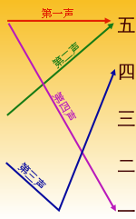
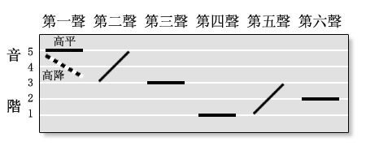

(原创)作者amazingRise,未经许可不得转载. 汉语读起来十分动听, 而它正是以其抑扬顿挫之语调而著名. 而粤语(广州话)中很好保留了入声的三个韵尾.本篇旨在描述粤语中三个入声的区别. 另外,本人并非专业研究人员.若有错误欢迎指正!
何为入声
- 入声早已消失在现代普通话(或更泛化地说,北方方言)中. 但是在一些方言,例如粤语,客家话,闽南语中得以保留.
- 与入声相对的是舒声. 所以普通话里面全都是舒声.
- 入声又被称爲喉塞音. 这种叫法很形象,可能会加快理解的过程.
- 入声字的韵尾以塞音快速结束, 大部分入声字听起来就像气流突然被阻断.
- 然而古代汉语却有入声, 时人作赋之时, 有些便以入声作爲韵尾. (所以从这一角度讲,用一些方言(例如粤语)而不是现代普通话,才能更好地表现出它的艺术特色. 下文会举出一些例子.)
五度标记法
汉语读起来十分动听, 而它正是以其抑扬顿挫之语调而著名. 这一点让许多非汉语母语的人摸不到头脑. 所以如何表示汉语的声调呢?(这里汉语泛指普通话以及其他汉语方言)
考虑到读者很多爲讲普通话的朋友.故在讲述入声之前,先给大家介绍一种记录现代汉语声调的最广泛的方法:五度标记法.(由赵元任先生发明,他被称爲汉语言学之父)
下面我将以现代汉语普通话爲例, 跟大家简单介绍一下五度标记法.
用五度标记法表示现代汉语的四个声调
在现代普通话中有四个声调,他们分别是: 阴平, 阳平, 上声, 去声. 现代汉语拼音方案中用一声,二声,三声,四声表示这四个音调.
五度标记法它标记了一个音韵的起始,中间过程(有时省略),和结尾的音调高低. 对于音调的高低有两种表示形式:一种是数字法, 一种是曲线法. 以现代汉语普通话的四个声调爲例,我放出一张用五度标记法标记的四个声调的图,大家先体会一下.  图中的曲线就是五度标记法的曲线法啦,而右侧 一二三四五 表示五度标记法的数字法.
曲线法很直观,声调越高,曲线中对应的那一点越高. 而数字法的某一位置的数值越高,则代表该位置的数字表示的声调越高.
所以说,普通话的一声的调值爲55, 二声的调值爲35, 三声的调值爲214, 四声的调值爲51. (一些北方方言与普通话的最大区别便在于调值)
这麽说可能不是很直观. 大家可以尝试用普通话大声朗读这四个字来体会一下它的声调变化. (感谢维基百科提供的好例子) 番（fan 一声）[55]，茄（qie 二声）[35]，炒（chao 三声）[214]，蛋（dan 四声）[51]。
五度标记法表示了音调的相对高低
五度标记法与现代汉语拼音方案的最大不同在于: 五度标记法的数字代表相对调值的高低.而现代汉语拼音方案的四个数字则仅代表不同的声调调型. (与粤拼类似)
好的,这就是五度标记法. 大家可能还是有一些不懂的地方. 在下文我将介绍粤语的九声六调. 由于粤语的音调更加丰富,所以可能更加便于理解五度标记法的作用. (反正我当时觉得,哇,这玩意简直是神器)
粤语中的九声六调
由于笔者所接触到的粤语大多均爲广州话. 所以本文暂且以粤语广州话爲标准探讨. 下文所指粤语,也均爲广州话爲代表的粤语.
援引自「中文字元资料页」的内容：
粤音则由四声，发展成九种声调，分别爲：「阴平」、「阴上」、「阴去」，「阳平」、「阳上」、「阳去」，「阴入」、「中入」和「阳入」。其中「阴平、阴上、阴去、阴入、中入」是阴声系，「阳平、阳上、阳去、阳入」是阳声系。阴声系的调值较高，阳声系的调值较低。
| 音调 | 阴平 | 阳上 | 阴去 | 阳平 | 阳上 | 阳去 | 阴入 | 中入 | 阳入 |
|---|---|---|---|---|---|---|---|---|---|
| 五度数字法 | 55 | 35 | 33 | 21 | 13 | 22 | 5(5) | 3(3) | 2(2) |
| 简单的粤拼 | 1 | 2 | 3 | 4 | 5 | 6 | 1 | 3 | 6 |
| 另一种粤拼 | 1 | 2 | 3 | 4 | 5 | 6 | 7 | 8 | 9 |
爲了简略描述,有的音调对应非唯一调值的我没有标出.大家见谅. 最准确的请参照原网页.
值得注意的是,现代粤拼的数字,仅仅代表某一个调型,并不代表本身声调的高低. 与现代汉语拼音方案一样,数字本身是无意义的. 因此，人们说粤语有「九声六调」（九个声调，六种音高）。至于语音学学者，则大多把「声调」直接定义作音高，不计算其顿错性，就会直接说粤语有「六个声调」。两种说法的分别，只是对「声调」定义不同而已。
下面附上更加直观的曲线法. 其中省略了7 8 9三个声调,因爲它们的音高与1 3 6的起点是相同的. (图片援引自粤语协会) 
有一个简单的方法,你需要找一个会广州话的人,分别读一下「三 九 四 零 五 二 七 八 六」. 这九个数字正好分别对应粤拼的1 2 3 4 5 6 7 8 9声.
如果读者在此对于区分六个音调仍然存疑,可进入这个网站:香港语言学学会粤语拼音方案进行音频试听. 仔细听,才能体会出它们的区别. 毕竟多听才是学习语言的最佳方式.
个人认爲,对于非粤语母语者,学习粤语最准确的方法是先学习这一拼音方案. (这样才能更加准确. 当然,多听多说才是根本.)
粤语(广州话)中的入声
粤语(广州话)中很好保留了入声的三个韵尾: -p -t -k. 在粤语中,入声是无声除阻音. 也就是说,唸到入声的时候,是不需要发出声音的,但是需要有气流的阻断这一过程.
但是不同韵尾的阻断方式是不一样的.
我是如何发现入声的区别的
起初我以爲粤语的入声只是单纯地阻断气流.
于是忽略掉了入声之间的区别.
后来被事实狠狠地打脸.
最早是读「入」和「日」字的时候,感觉到这两个字的韵尾略有不同. 我仔细查阅了一下字典,又听了一下,发现这两个字确实有区别.
入的粤拼是: jap6 日的粤拼是: jat6
同样的区别可以体现在「八」和「百」这两个字上面. 八: baat3 百: baak3
入声的区别
前面说过,入声听起来就像气流被突然阻断一样. 而粤语中 -p -t -k三个入声的区别就在于:气流被阻断的部位不同.
简单来讲:
-p 要在嘴脣处阻断气流. 如 垃圾 laap6 saap3. 在两个字的结尾,要将嘴脣闭合,以阻断气流. -t 要在舌尖处阻断气流. 如 佛山 fat6 saan1. 在佛字的结尾,要用舌尖抵住牙齿阻断气流. -k 要在舌根处阻断气流. 如 白话 baak6 wa2. 在白的结尾,要用舌根抵住硬齶软齶交界处阻断气流.
如果我们用更通俗一些的方式阐述,则是: 在粤拼中遇到这三个韵尾的时候, 你需要分别做出p t k的口型来阻断气流. 这与英语口语中的尾音略有类似.(例如keep,不可能读成 ki pu,最后的p会很轻很轻,并且不发音.)
入声试听
关于每个字的具体读音,我强烈推荐粤拼方案的网站. 粤拼资料库
补充之其他粤语拼音方案
目前最广泛的粤语拼音方案是粤拼,也就是香港语言学学会的粤语拼音方案. 故本文採用粤拼来标注.
但在我阅读一些其他的粤语教程的时候,发现有的教程的入声韵尾并不是用-p -t -k这三个字母标记的. 我见过-b -d -g这三个字母标注韵尾.甚至说与-p -t -k相混合标注韵尾的用法. 其实这些标记方法是相同的. 因爲前面说过入声在粤语中是无声除阻音,也就是不发声. 而p-b, t-d, k-g这三组辅音的区别在于前者送气,后者不送气. 在入声的环境中,由于不发声,只需要摆好口型,所以送气和不送气辅音可以视作等同的 (这里用IPA来标注更加准确.后来想想还是算了.太複杂了没必要.)
举个例子,在韵尾爲p的字中,收尾的时候无论你是摆b的口型,还是摆p的口型,是一样的. (顺便体会一下入声的发声程度)
不过我们还是要以最流行的粤拼方案爲准. 这样可以少走一些弯路.
次回予告
今天就写到这里.🤔️
回顾了一下整个文章,我讲九声六调还费了不少工夫. 哈哈哈
突然想到我下一篇是不是应该讲一下-a- 与 -aa- 的区别呢?
算了算了,我自己还没搞明白. 😂️
下一篇我可能写一篇随想,也有可能加一篇对本篇的补充. (如果是随想的话,那麽大概是关于「元」（meta）这一概念？)
如果有什麽不准确的地方,欢迎各位在评论区指出. (原创)作者amazingRise 请尊重作者的劳动成果,未经许可不得转载. 但欢迎转发本网址,以分享给其他人.
共同传承中华文化🥳